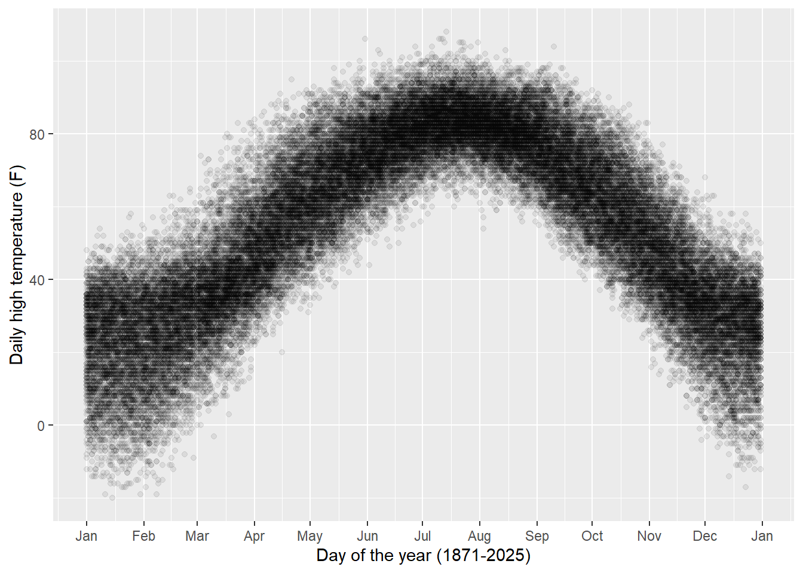
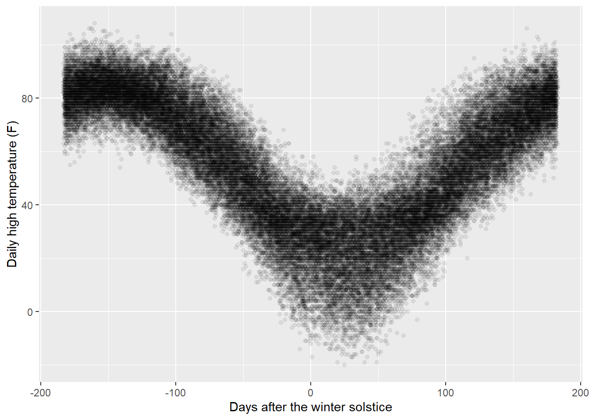
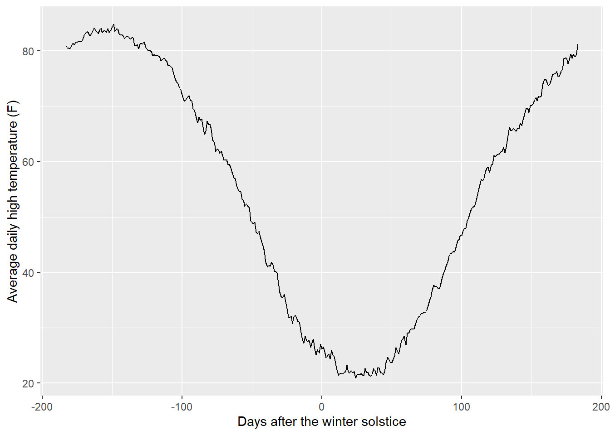
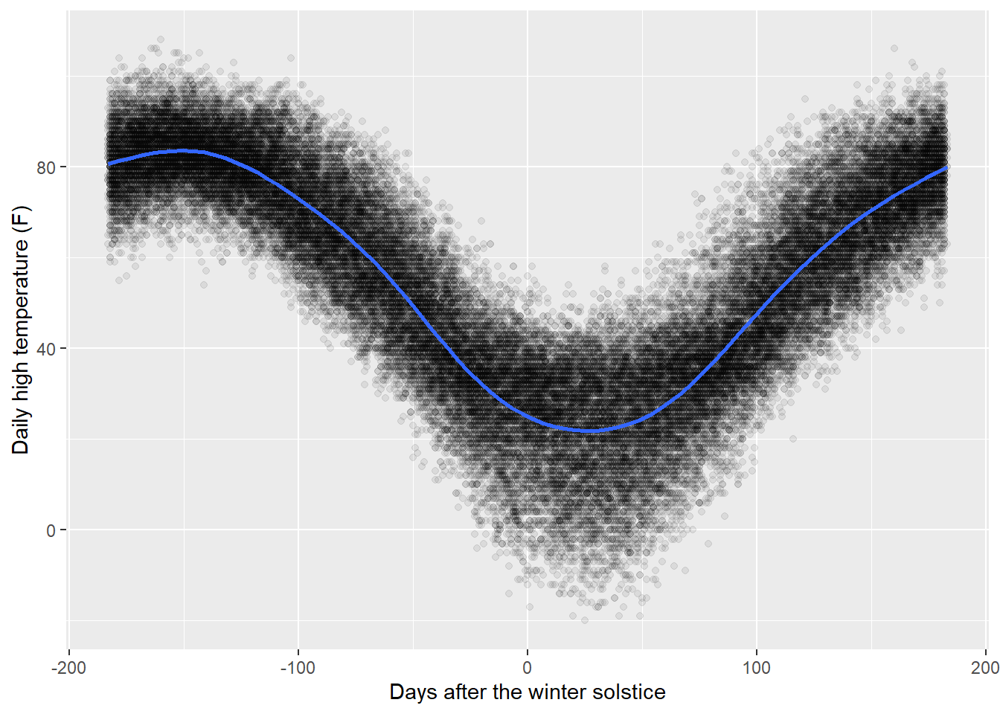
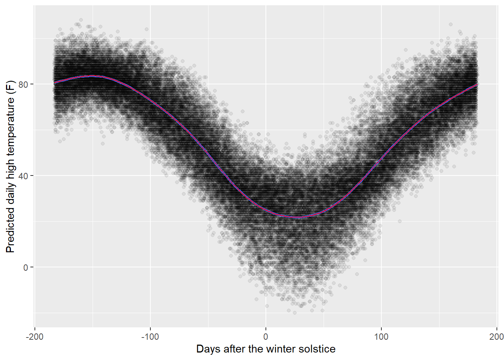
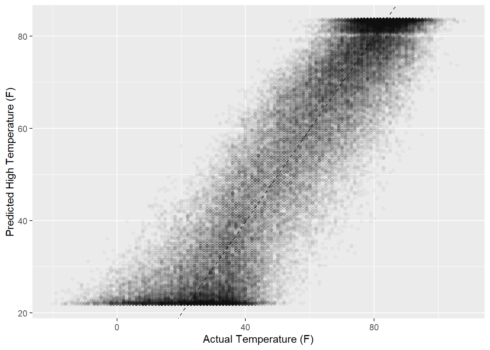
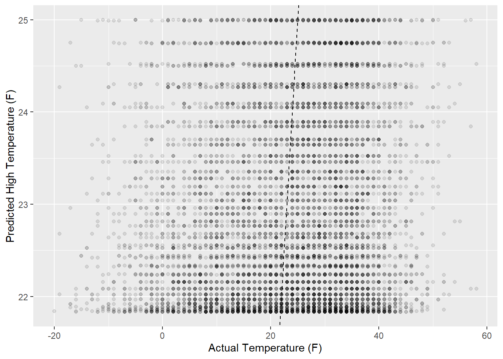
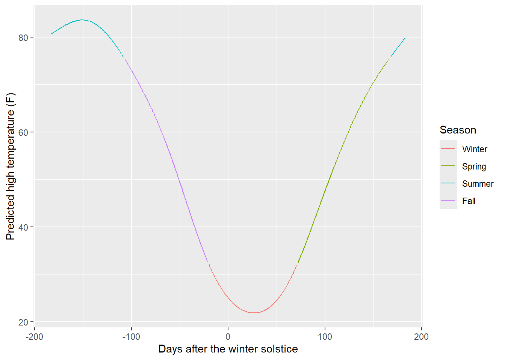
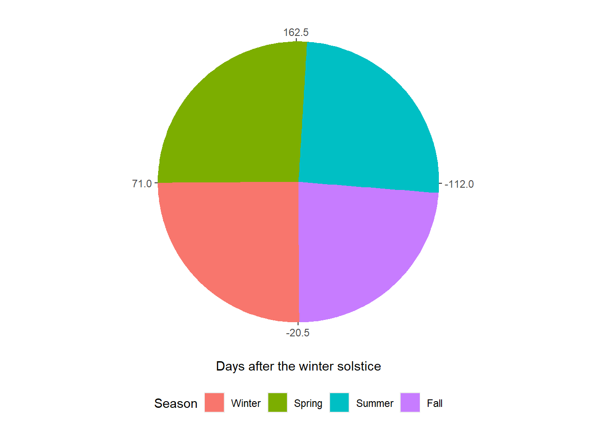
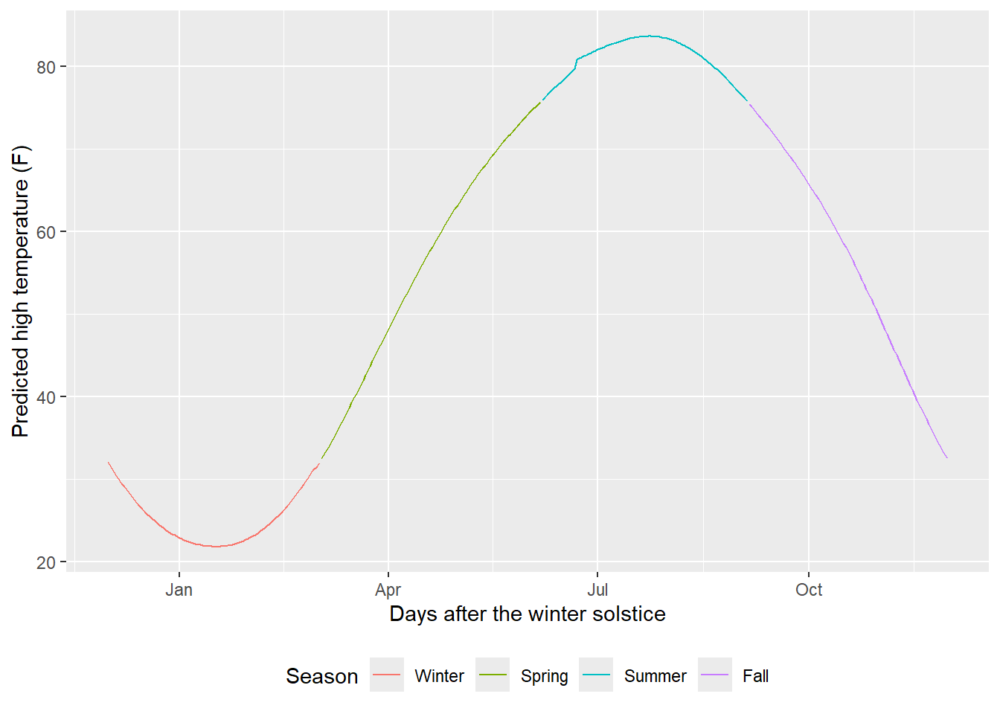

I thought that many of the markers they suggest to start the seasons don’t really work for Minnesota, especially for winter.
For example, they suggested “When the first snow falls” or “When the first snow sticks to the ground” as markers for the start of winter. Obviously, in Minnesota, the first true snowfall is frequently in late October. Anyone who remembers the Halloween Blizzard of 1991 will enthusiastically tell you about it. They also suggest March 1 as a start date for spring, and we all know that March 1 still feels like winter.
I decided to calculate the start and end of each season based on historical weather data for the Twin Cities area - that’s the metropolitan region of Minneapolis and St. Paul, Minnesota. Specifically, I want to look at the distribution of daily high temperatures: summer should be the quarter centered around the estimated hottest day of the year, and winter should be the quarter centered around the estiamted coldest day of the year.
I downloaded the data from the very beginning (January 1, 1871) through the yesterday (March 11, 2026). Let’s import and examine the data:
# Use the here package to manage filepathshere::i_am("seasons.qmd")
here() starts at D:/quarto_website2
weather_raw <- readr::read_csv( here::here("data/Twin Cities Historical Climate Data.csv"),#' Import the first two columns as date and numeric format, and no other#' columnscol_types = readr::cols_only(readr::col_date(), readr::col_number()),# Rename the columnsskip =1,col_names =c("date", "high_temp"),# Per the data documentation, interpret "M" as missing (NA)na =c("", "M"),skip_empty_rows =TRUE)gtsummary::tbl_summary( weather_raw,type =~"continuous2",statistic =~c("{min}", "{max}"))
Characteristic
N = 56,683
date
Min
1871-01-01
Max
2026-03-11
high_temp
Min
-20
Max
108
Unknown
640
For a first cleaning step, let’s:
drop the records that are missing temperature data,
make sure the data is sorted by date,
add a column to convert every date to the year 2024, so we can see it collapsed by month & day across all years, and then
check the distribution
weather <- weather_raw |> tidyr::drop_na() |> dplyr::arrange(date) |> dplyr::mutate(date24 = lubridate::make_date(year =2024,month = lubridate::month(date),day = lubridate::day(date) ) )library(ggplot2)ggplot(data = weather) +geom_point(mapping =aes(x = date24, y = high_temp), alpha =0.07) +scale_x_date(name ="Day of the year (1871-2025)",date_labels ="%b",date_breaks ="1 month" ) +scale_y_continuous(name ="Daily high temperature (F)")

We can see the difference between seasons very clearly! We can also see a very thin line on February 29 where there is less data.
Use astronomy instead of the Gregorian calendar
However, that means we have a problem: taking simply the day and month of every reading doesn’t account for leap years. The data on a leap year is shifted slightly compared to a non-leap-year.
We know that the temperature isn’t actually a function of the date, but a function of the Earth’s position relative to the Sun. To approximate that, we could standardize each date to the number of days after the winter solstice each year. We can scrape historical solstice dates from the US Navy’s website using the rvest package:
extract_solstice_data <-function(year_chr) {# Scrape data from the HTML table on the Navy webpage for each year scraped_data <- glue::glue("https://aa.usno.navy.mil/calculated/seasons?year={year_chr}&tz=6.00&tz_sign=-1&tz_label=true&dst=true&submit=Get+Data" ) |> rvest::read_html() |> rvest::html_node("table") |> rvest::html_table()# Rename columnscolnames(scraped_data) <-c("phenomenon", "date", "time")# Filter to only include the winter solstice date scraped_data |> dplyr::filter(phenomenon =="Solstice") |> dplyr::filter(stringr::str_detect(date, "December"))}# Run this function on every year from 1870 through 2026years <-c(1870:2026)#' This takes a lot of processing time to run, and it's rude to repeatedly#' scrape the same website, so I'm not actually going to run it every time I#' render this page - I ran it once and saved the dataset.if (FALSE) { solstice_data <- purrr::map(years, extract_solstice_data, .progress =TRUE)# SavesaveRDS(solstice_data, here::here("data/solstice_data.RData"))} else { solstice_data <-readRDS(here::here("data/solstice_data.RData"))}solstice_data2 <- dplyr::bind_rows(solstice_data) |># Keep only the date column dplyr::select(date) |># Convert character to date and set year dplyr::mutate(solstice_date = lubridate::ymd(date),year = lubridate::year(solstice_date),.keep ="unused" )print(solstice_data2)
Although the top slice of this dataset makes it look like the winter solstice is always on December 21, that is not true! It is occasionally on Dec 22 and very rarely on Dec 20 or Dec 23. I also set the Navy website to account for Daylight Savings Time (as much as possible) and our time zone (Central time, UTC-6).
Now we can merge the solstice dates into the dataset, and convert the dates into days after the winter solstice:
# Set random seed based on current time (as I'm writing) in milliseconds# format(Sys.time(), digits = 10)# "2026-03-12 09:54:33.658463"set.seed(658463)weather2 <- weather |>#' Merge the solstice data in twice - for each record, we want both the#' current year and the previous year's solstice dates, so we can choose the#' closer one dplyr::mutate(year = lubridate::year(date),last_year = year -1 ) |> dplyr::left_join( solstice_data2,by = dplyr::join_by(year) ) |> dplyr::left_join( solstice_data2 |> dplyr::rename(last_solstice_date = solstice_date),by = dplyr::join_by(last_year == year) ) |> dplyr::mutate(solstice_days_this_year = lubridate::interval(solstice_date, date) / lubridate::days(),solstice_days_last_year = lubridate::interval( last_solstice_date, date ) / lubridate::days(),random_number =runif(n =nrow(weather)),solstice_days = dplyr::case_when(#' Choose whichever solstice date is closest (before or after) the record #' dateabs(solstice_days_this_year) <abs(solstice_days_last_year) ~ solstice_days_this_year,abs(solstice_days_last_year) <abs(solstice_days_this_year) ~ solstice_days_last_year,#' If they are equidistant (approximately June 21), choose randomly#' between 183 and -183 random_number <0.5~ solstice_days_this_year,.default = solstice_days_last_year ) )weather2 |> dplyr::select( date, solstice_date, last_solstice_date, solstice_days ) |>print()
Now our distribution looks roughly the same, just flipped because the center of the x-axis is now the winter solstice:
ggplot(data = weather2) +geom_point(mapping =aes(x = solstice_days, y = high_temp), alpha =0.07) +scale_y_continuous(name ="Daily high temperature (F)") +labs(x ="Days after the winter solstice")

Predicted daily high temperature for each day
Now, we want to summarize the temperature distribution for each day. We could simply take the mean of each day, but the resulting curve is still jagged:
weather_avg <- weather2 |> dplyr::summarize(avg_high_temp =mean(high_temp),.by = solstice_days )ggplot(data = weather_avg) +geom_line(mapping =aes(x = solstice_days, y = avg_high_temp)) +scale_y_continuous(name ="Average daily high temperature (F)") +labs(x ="Days after the winter solstice")

Another method would be to add a geom_smooth() line to display a predicted temperature line:
ggplot(data = weather2) +geom_point(mapping =aes(x = solstice_days, y = high_temp),alpha =0.07 ) +scale_y_continuous(name ="Daily high temperature (F)") +geom_smooth(mapping =aes(x = solstice_days, y = high_temp)) +labs(x ="Days after the winter solstice")
`geom_smooth()` using method = 'gam' and formula = 'y ~ s(x, bs = "cs")'

This is much clearer, but we can’t extract the predicted temperature values from the graph. Instead of using geom_smooth(), we can calculate the values of that predicted temperature line using the same method. Per the geom_smooth() documentation:
… [T]he smoothing method is chosen based on the size of the largest group (across all panels). stats::loess() is used for less than 1,000 observations; otherwise mgcv::gam() is used with formula = y ~ s(x, bs = "cs") with method = "REML".
In other words, because our dataset has well over 1,000 observations, geom_smooth() uses a generalized additive model. The tidymodels package parsnip includes a generalized additive model function parsnip::gen_additive_mod() that defaults to the mgcv engine. Let’s build and fit a model using the parsnip workflow:
# Create the model specificationgam_spec <- parsnip::gen_additive_mod() |># method parameter ("REML") specified in the geom_smooth() documentation: parsnip::set_engine("mgcv", method ="REML") |> parsnip::set_mode("regression")gam_spec
# Fit the model to our datasetgam_fit <- gam_spec |> parsnip::fit(# The formula specified in the geom_smooth() documentation:# y ~ s(x, bs = "cs") high_temp ~s(solstice_days, bs ="cs"),data = weather2 )gam_fit
parsnip model object
Family: gaussian
Link function: identity
Formula:
high_temp ~ s(solstice_days, bs = "cs")
Estimated degrees of freedom:
8.97 total = 9.97
REML score: 211946.2
Let’s see how our model’s predicted high temperatures (in red) compares to the original geom_smooth() line (in blue):
ggplot() +labs(x ="Days after the winter solstice",y ="Predicted daily high temperature (F)" ) +geom_point(data = weather3,mapping =aes(x = solstice_days, y = high_temp),alpha =0.07 ) +geom_smooth(data = weather3,mapping =aes(x = solstice_days, y = high_temp) ) +geom_line(data = weather_pred,mapping =aes(x = solstice_days, y = predicted_high_temp),color ="red" )
`geom_smooth()` using method = 'gam' and formula = 'y ~ s(x, bs = "cs")'

Looks really close to me! We can also check our predicted temperatures against the actual temperatures - we can see the top and bottom of the curve where the predicted temperatures “flatten” at just above 20 and 80 degrees:
ggplot(weather3, aes(x = high_temp, y = predicted_high_temp)) +# Create a diagonal line:geom_abline(lty =2) +geom_point(alpha =0.03) +labs(y ="Predicted High Temperature (F)", x ="Actual Temperature (F)")

But there is still variation in the predicted temperatures if we look closely:
weather3 |> dplyr::filter(predicted_high_temp <25) |>ggplot(aes(x = high_temp, y = predicted_high_temp)) +# Create a diagonal line:geom_abline(lty =2) +geom_point(alpha =0.1) +labs(y ="Predicted High Temperature (F)", x ="Actual Temperature (F)")

Season dates
Now, we can identify the estimated coldest and hottest quarters of the year.
weather_pred2 <- weather_pred |> dplyr::mutate(season = dplyr::case_when( predicted_high_temp <quantile(predicted_high_temp, 0.25) ~"Winter", predicted_high_temp >quantile(predicted_high_temp, 0.75) ~"Summer", solstice_days >0~"Spring", solstice_days <0~"Fall" ) |> forcats::fct(levels =c("Winter", "Spring", "Summer", "Fall")) )gtsummary::tbl_summary( weather_pred2,include = solstice_days,type =~"continuous2",statistic =~c("{min}", "{max}"),label =~"Days after the winter solstice",by = season) |> gtsummary::modify_footnote_header(footnote ="The min and max days for summer look strange because early summer is positive (167 to 183 days after the winter solstice), and then becomes negative around the summer solstice (183 to 106 days *before* the winter solstice).",columns ="stat_3" )
Characteristic
Winter
N = 92
Spring
N = 96
Summer
N = 921
Fall
N = 87
Days after the winter solstice
Min
-20
72
-183
-107
Max
71
167
183
-21
1 The min and max days for summer look strange because early summer is positive (167 to 183 days after the winter solstice), and then becomes negative around the summer solstice (183 to 106 days before the winter solstice).
ggplot(mapping =aes(x = solstice_days,y = predicted_high_temp,color = season, )) +#' Draw as two layers so that ggplot doesn't try to connect both summer lines#' across the axisgeom_line(data = weather_pred2 |> dplyr::filter(solstice_days <=166), ) +geom_line(data = weather_pred2 |> dplyr::filter(solstice_days >166), ) +labs(x ="Days after the winter solstice",y ="Predicted high temperature (F)",color ="Season" )

It surprised me somewhat that spring is longer than fall - I would have guessed that the coldest and hottest quarters of the year would be exactly opposite each other. But experientially, it sounds correct! Fall always feels like a faster transition than spring. On a radial chart, it’s easier to see how this works:
ggplot() +geom_rect(data = weather_pred2,mapping =aes(x = solstice_days, fill = season),y =1,width =2,ymin =0,ymax =1 ) +#' These breaks are exact quarters (91.5 days apart) starting with 20.5 days#' after the winter solstice, which is the division between fall and winterscale_x_continuous(breaks =c(-112, -20.5, 71, 162.5)) +labs(x ="Days after the winter solstice", fill ="Season", y =NULL) +# Rotate the graph so that the break at 20.5 days points downward.coord_radial(expand =FALSE, start = (20.5/366) *2* pi) +theme_sub_axis_y(text =element_blank(), ticks =element_blank()) +theme_sub_legend(position ="bottom")

Then, we convert “days after the winter solstice” to typical dates:
# Take the most common date for each number of days after the winter solsticesolstice_to_date <- weather3 |> dplyr::count(solstice_days, date24) |> dplyr::filter( n ==max(n),.by = solstice_days ) |># Reduce to 1:1 solstice days to dates, for 365 rows exactly dplyr::filter( n ==max(n),.by = date24 ) |> dplyr::select(!n)weather_pred3 <- weather_pred2 |> dplyr::right_join(solstice_to_date, by = dplyr::join_by(solstice_days)) |># Adjust the year on early winter dates to 2023 so they appear in order dplyr::mutate(date_adj = dplyr::if_else( season =="Winter"& lubridate::month(date24) >6, date24 - lubridate::years(1), date24 ) )gtsummary::tbl_summary( weather_pred3,include =c(date_adj, predicted_high_temp),type =~"continuous2",statistic =~c("{min}", "{median}", "{max}"),label =list(date_adj ="Month and day",predicted_high_temp ="Predicted high temperature (F)" ),digits =list(date_adj = scales::label_date(format ="%b %d"),predicted_high_temp = scales::label_number(accuracy =0.1) ),by = season)
Characteristic
Winter
N = 92
Spring
N = 96
Summer
N = 90
Fall
N = 87
Month and day
Min
Dec 01
Mar 03
Jun 07
Sep 05
Median
Jan 15
Apr 19
Jul 21
Oct 18
Max
Mar 02
Jun 06
Sep 04
Nov 30
Predicted high temperature (F)
Min
21.8
32.5
75.7
32.5
Median
24.3
57.8
81.7
57.5
Max
32.1
75.7
83.6
75.4
ggplot() +geom_line(data = weather_pred3,mapping =aes(x = date_adj,y = predicted_high_temp,color = season, ) ) +scale_x_date(date_labels ="%b") +labs(x ="Days after the winter solstice",y ="Predicted high temperature (F)",color ="Season" ) +theme_sub_legend(position ="bottom")

I have to admit, other than the little bump in the prediction curve around the summer solstice, this is really satisfying to me.